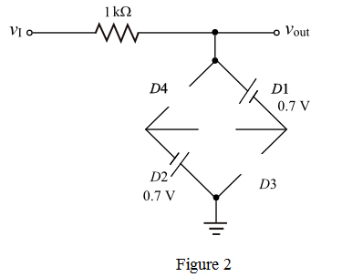

Step 1:
Case 1:
Consider the range of input signal as
For  , the diode
, the diode  is OFF and
is OFF and  is OFF.
is OFF.
For the diode  is OFF and
is OFF and  is OFF.
is OFF.
Draw the following circuit diagram:
From Figure 1, irrespective of the diodes and the output signal follows input signal.
Hence,
Step 2:
Case 2:
Consider the range of input signal is,  .
.
For  the diode is ON and is OFF. The input voltage is less than the Zener breakdown voltage (Zener diode is reverse biased).
the diode is ON and is OFF. The input voltage is less than the Zener breakdown voltage (Zener diode is reverse biased).
Draw the following circuit diagram:

From Figure 2 observe that the output signal follows input signal.
Hence,

Step 3:
Case 3:
Consider the range of input signal as  .
.
For the diode  is ON and
is ON and  is OFF. The input voltage is greater than the Zener breakdown voltage (Zener diode is in break down region). The diode,
is OFF. The input voltage is greater than the Zener breakdown voltage (Zener diode is in break down region). The diode,  is in reverse biased (due to Zener diode).
is in reverse biased (due to Zener diode).
Draw the following circuit diagram:
From Figure 3, observe that the output signal follows the input signal.
Hence,

Step 4:
Case 4:
Consider the range of input signal as  .
.
For the diode  is ON and
is ON and  is OFF. The input voltage is greater than the Zener breakdown voltage (Zener diode is in break down region). The diode
is OFF. The input voltage is greater than the Zener breakdown voltage (Zener diode is in break down region). The diode  is in forward bias.
is in forward bias.
Draw the following circuit diagram:
From Figure 4, the output signal is,
Step 5:
Case 5:
Consider the range of input signal is,  .
.
For the diode  is ON and
is ON and  is in reverse bias. The input voltage is less than the zener breakdown voltage (zener diode is reverse biased).
is in reverse bias. The input voltage is less than the zener breakdown voltage (zener diode is reverse biased).
Draw the following circuit diagram:
From Figure 5, observe that the output signal follows the input signal.
Hence,

Step 6:
Case 6:
Consider the range of input signal as  .
.
For  the diode
the diode  is ON and
is ON and  is OFF. The input voltage is greater than the Zener breakdown voltage (Zener diode is in break down region). The diode
is OFF. The input voltage is greater than the Zener breakdown voltage (Zener diode is in break down region). The diode  is reverse biased.
is reverse biased.
Draw the following circuit diagram:
From Figure 6, observe that the output signal follows the input signal.
Hence,

Step 7:
Case 7:
Consider the range of input signal as  .
.
For the diode  is ON and
is ON and  is OFF. The input voltage is greater than the Zener breakdown voltage (Zener diode is in break down region). The diode
is OFF. The input voltage is greater than the Zener breakdown voltage (Zener diode is in break down region). The diode  is forward biased.
is forward biased.
Draw the following circuit diagram:
From Figure 7, observe that the output signal is,
Step 8:
Draw the transfer characteristic of circuit as shown in Figure 8.
Thus, the transfer characteristic is drawn.